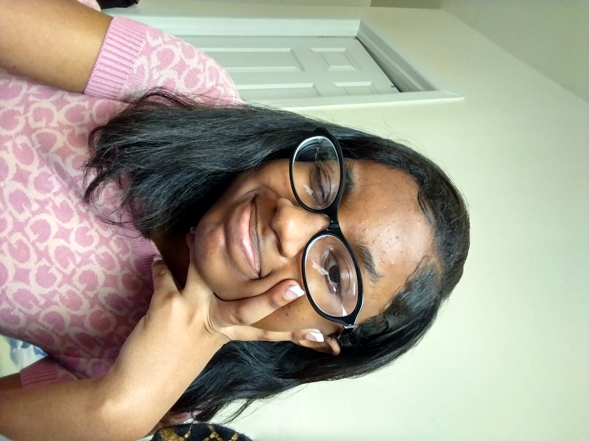

My name is Laila Mallette-Fraser and I have a keen interest in abstract art. I’ve had the interesting experience of living in a foreign country, being raised by my grandparents. My grandfather is an abstract artist and has always encouraged me to have a creative outlet. My grandmother is a self-proclaimed ‘theater-nerd’ and I’ve definitely followed in her footsteps, attending many different shows since coming back to New York. Considering my upbringing I would say I enjoy art that is very intentionally chaotic. Art that contains different patterns and motion, which can invoke a certain emotion, but still leaves room for interpretation. I love art that is full of color and vibrance and I hope to bring that into my work throughout the semester. With the world being particularly grim at the moment, I want to create media that is joyful and can hopefully invoke some happiness. I want to explore themes of healing and peace, because it is just as important to depict beauty we see in the world as it is to all the wrongdoings taking place as well. I want to create something that will be therapeutic for me personally, as it is easy to be swept up in everything negative. I want to take this opportunity to be more experimental, try new things and to gain a deeper understanding of how to create and present my own art.